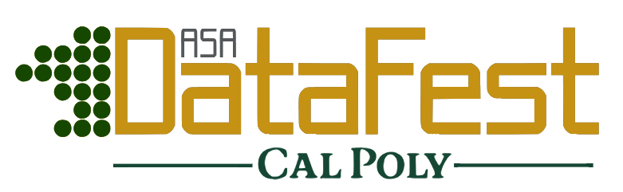
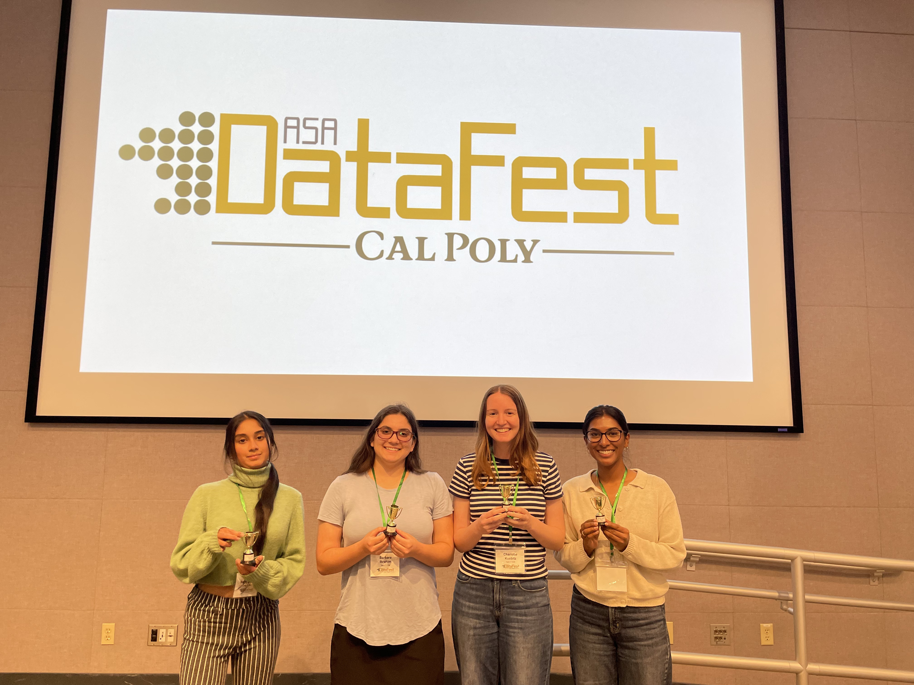
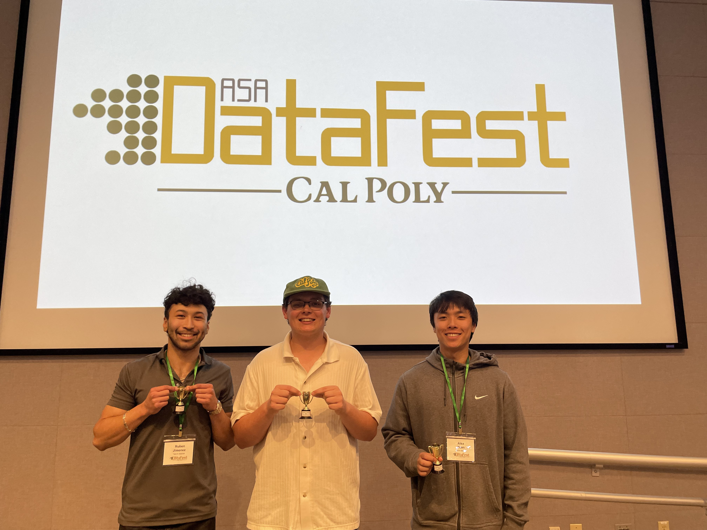
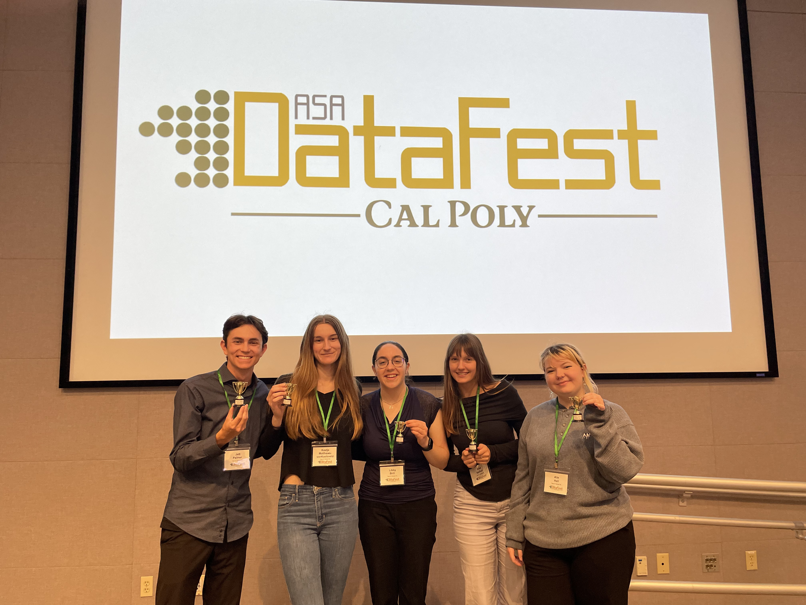
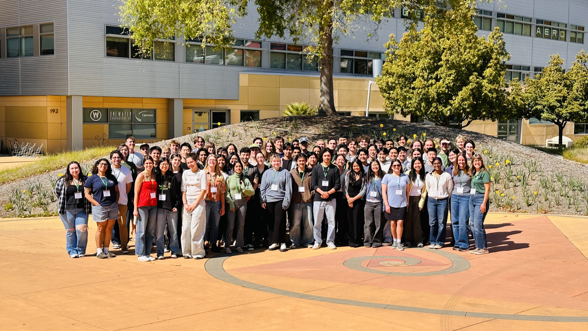

2025
19 Teams
3 Colleges at Cal Poly + 2 Teams from CSU-Monterey Bay
1 Data Set
A total of 76 undergraduate students participated in a weekend of visualizing, summarizing, and analyzing data. Students participated from across three colleges including: mostly Statistics & Data Science major in the Bailey College of Science and Technology, a couple of handfuls of Computer Science and Software Engineering majors in the College of Engineering, and a student from Public Health in the School of Liberal Arts. We also welcomed two amazing teams from CSU-Monterey Bay down for the weekend.






2024
10 Teams
3 Colleges at Cal Poly
1 Data Set
A total of 39 undergraduate students participated in a weekend of visualizing, summarizing, and analyzing data about an online statistics textbook. Students participated from across three colleges including: mostly Statistics & Data Science major in the Bailey College of Science and Technology, a handful of Computer Science majors in the College of Engineering, and a couple of students completing the Quantitative Concentration from the Orfalea College of Business.


Read more about our first in-person DataFest at First In-Person DataFest Held at Cal Poly: Tackling Complex Problems in Teams by Nick Wilson.